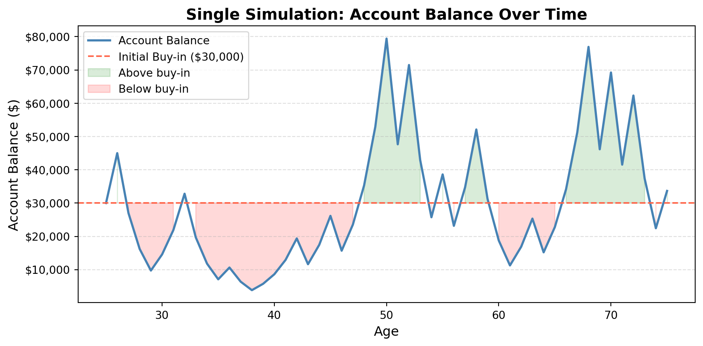
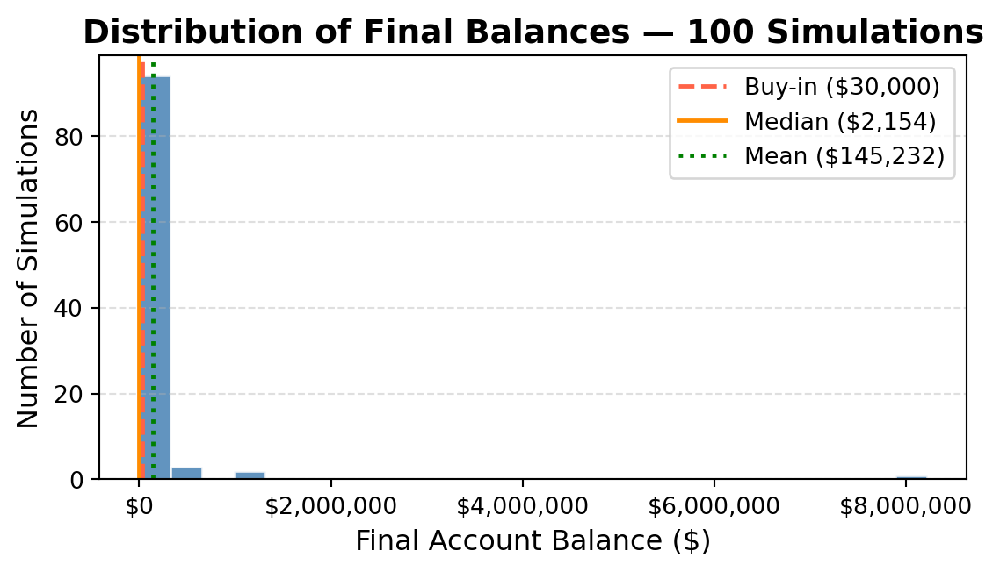
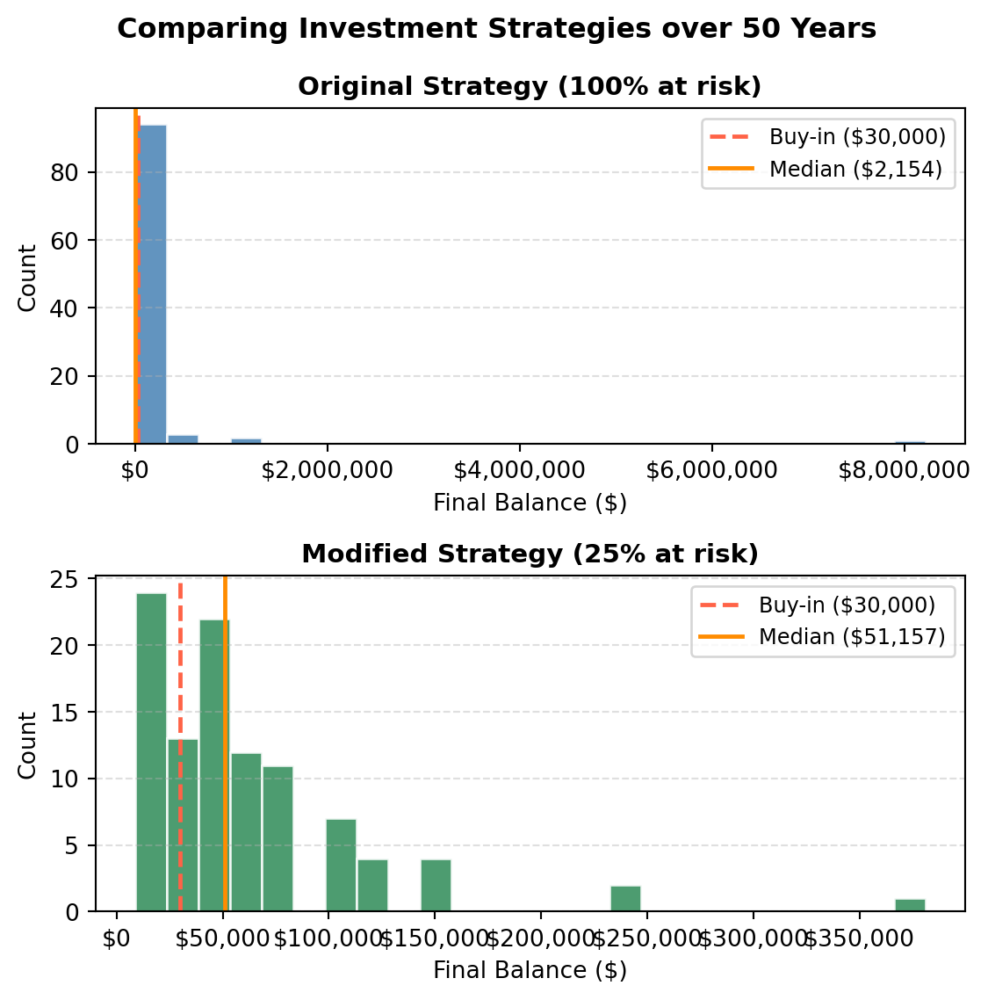

Simulation Challenge
Investment Game Analysis
🎲 Simulation Challenge
The Investment Game
You have the opportunity to buy into a game next week with $30,000. Each year after buy-in you flip a fair coin:
- Heads: increase your account balance by 50%
- Tails: decrease your account balance by 40%
You play annually until age 75 (assumed starting age: 25, so N = 50 flips). The mission is to analyze outcomes and communicate insights clearly.
Generative DAG Model
Section 1: Expected Value After 1 Flip
After one coin flip, the expected account balance is $31,500 — a gain of 5.0% over the initial $30,000 buy-in.
How does this work? With a fair coin, there is a 50% chance of landing heads and walking away with $45,000, and a 50% chance of landing tails and walking away with $18,000. Averaging these two outcomes yields $31,500.
At first glance, this positive expected value seems to argue in favor of buying in. If you could play this game thousands of times simultaneously, you would on average earn $1,500 per round. Based purely on expected value, the game appears favorable.
However, expected value alone can be a misleading guide — the two outcomes are highly asymmetric, and a single loss costs you far more (in absolute dollars) than a single win gains you. This asymmetry becomes critical when the game is played sequentially over many years, as explored in the sections below.
Section 2: Single Simulation Over Time

In this particular simulation run, the coin landed heads 28 times and tails 22 times out of 50 flips — roughly 50/50. Yet the final account balance is $33,651.
This is the central paradox of multiplicative games: even a perfectly balanced split of wins and losses leads to a dramatically eroded balance. The math explains why — each tails multiplies the balance by 0.6, and each heads by 1.5. But these two multipliers are not symmetric: $1 × 1.5 × 0.6 = \(0.90\), meaning one win and one loss together leave you with only 90 cents on the dollar. Over 50 rounds, this decay compounds relentlessly.
I would not be satisfied with this outcome. Despite flipping the coin fairly, the compounding effect of losses has more than wiped out the initial investment. This simulation illustrates why the expected value from Section 1 can be dangerously misleading as a stand-alone decision criterion.
Section 3: 100 Simulations — Distribution of Final Balances

Across 100 simulations, the results paint a sobering picture. The mean final balance is $145,232, while the median final balance is only $2,154 — well below the $30,000 buy-in. The probability of ending with more than the initial investment is np.float64(0.25), meaning fewer than 1 in 4 players walk away with a profit.
This divergence between the mean and median is the key insight. A small number of simulations produce enormous balances — driven by lucky streaks of heads — which pull the mean upward. But the typical player, represented by the median, suffers a significant loss. The distribution is heavily right-skewed: most outcomes cluster near zero while a few outliers are spectacularly large.
These results reveal a fundamental tension: the game has a positive expected value but a negative typical outcome. This makes it a poor investment for a single player who only gets one shot at 50 years of play.
Section 4: Probability of Balance > $30,000 at Age 75
From the 100 simulations, the estimated probability of ending with a balance above $30,000 is np.float64(0.25) (approximately np.float64(25.0)%). In other words, about np.float64(75.0)% of players lose money over the 50-year game.
This directly challenges the optimistic conclusion from Section 1. While the expected value after one flip is positive (+5%), the long-run probability of profit is far below 50%. The culprit is the geometric mean: one heads multiplied by one tails gives \(1.5 × 0.6 = 0.90\), a compound rate of negative 10% per pair of flips. Over time, this negative geometric drift overwhelms the occasional lucky streak.
The recommendation flips: do not buy in. The expected value, though positive, is driven by rare, extreme wins. The realistic outcome for any single investor is a slow erosion of capital. With roughly a 3-in-4 chance of losing money over 50 years, the game is not a sound investment.
Section 5: Modified Strategy — Bet Exactly 25% Each Round

Under the modified strategy — where only 25% of the balance is wagered each year — the payoffs per flip become \(×1.125\) on heads and \(×0.900\) on tails. The results are dramatically different.
The modified strategy median is $51,157, compared to just $2,154 for the original game. The probability of profit rises to np.float64(0.67) under the modified strategy, versus only np.float64(0.25) originally.
Why does betting less lead to better typical outcomes? The answer lies in the geometric mean. Under the modified strategy, one win and one loss yields \(1.125 × 0.900 = 1.0125\) — a compound gain of 1.25% per pair of flips, compared to a compound loss of 10% in the original game. By reducing the bet size, we flip the geometric mean from negative to positive.
The modified strategy does sacrifice some upside: the very largest outcomes in the original game are higher because they compound faster. But for a real investor playing once over 50 years, the modified strategy is vastly superior: it shifts the likely outcome from a near-certain loss to a probable gain.
Recommendation: adopt the modified 25% strategy. It offers a much more reliable path to wealth accumulation, even if it forgoes the lottery-ticket-style jackpots of the all-in approach.
Section 6: The Kelly Criterion
The Kelly Criterion is a formula for determining the optimal fraction of your wealth to bet in a repeated gamble so as to maximize the long-run expected growth rate of your account. It was derived by John L. Kelly Jr. in 1956 and is widely used in gambling theory and quantitative finance.
For a bet where you win a fraction \(b\) of your stake with probability \(p\), and lose a fraction \(a\) of your stake with probability \(q = 1 - p\), the Kelly fraction is:
\[f^* = \frac{p}{a} - \frac{q}{b}\]
Applying this to our game:
- \(p = 0.5\) (probability of heads)
- \(q = 0.5\) (probability of tails)
- \(b = 0.50\) (you gain 50% of whatever you bet on heads)
- \(a = 0.40\) (you lose 40% of whatever you bet on tails)
\[f^* = \frac{0.5}{0.4} - \frac{0.5}{0.5} = 1.25 - 1.00 = \mathbf{0.25}\]
The Kelly Criterion prescribes betting exactly 25% of your balance each round — precisely the modified strategy from Section 5. This is not a coincidence; Kelly’s formula is the mathematically optimal fraction for maximizing log-wealth growth over time.
Betting more than 25% (including the original 100% strategy) results in a negative geometric growth rate, eroding wealth in the long run despite a positive arithmetic expected value. Betting less than 25% is safer but leaves growth on the table. The 25% bet is the sweet spot that maximizes long-run compounding.
The Kelly Criterion strongly supports the recommendation to adopt the modified strategy. It is not just a good heuristic — it is provably optimal for investors seeking to grow wealth over many repeated bets.
Summary: Should You Buy In?
The investment game is a cautionary tale about the difference between expected value and typical outcome.
- Section 1 shows the arithmetic expected value is positive (+5% per flip), which naively suggests buying in.
- Sections 2–4 reveal that the typical long-run outcome is deeply negative: the median balance after 50 years falls far below the $30,000 buy-in, and fewer than 1 in 4 players walk away with a profit.
- Section 5 demonstrates that by restricting your bet to 25% of your balance, the typical outcome flips to positive — the median player now grows their wealth.
- Section 6 confirms that 25% is the Kelly-optimal bet, the theoretically correct stake for maximizing long-run growth.
Final verdict: do not buy in under the original rules. The all-in structure is wealth-destroying for the vast majority of players. If a 25% partial-bet variant were offered, it would be worth taking.